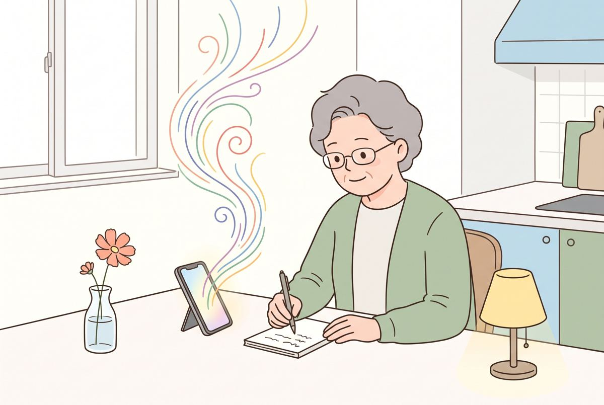
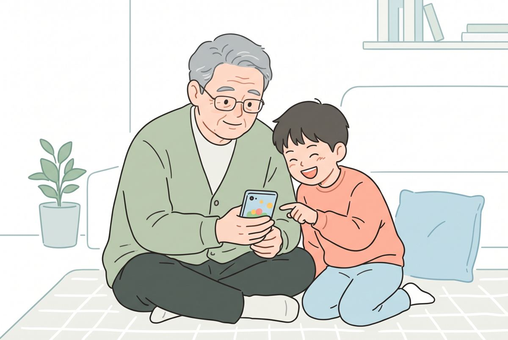
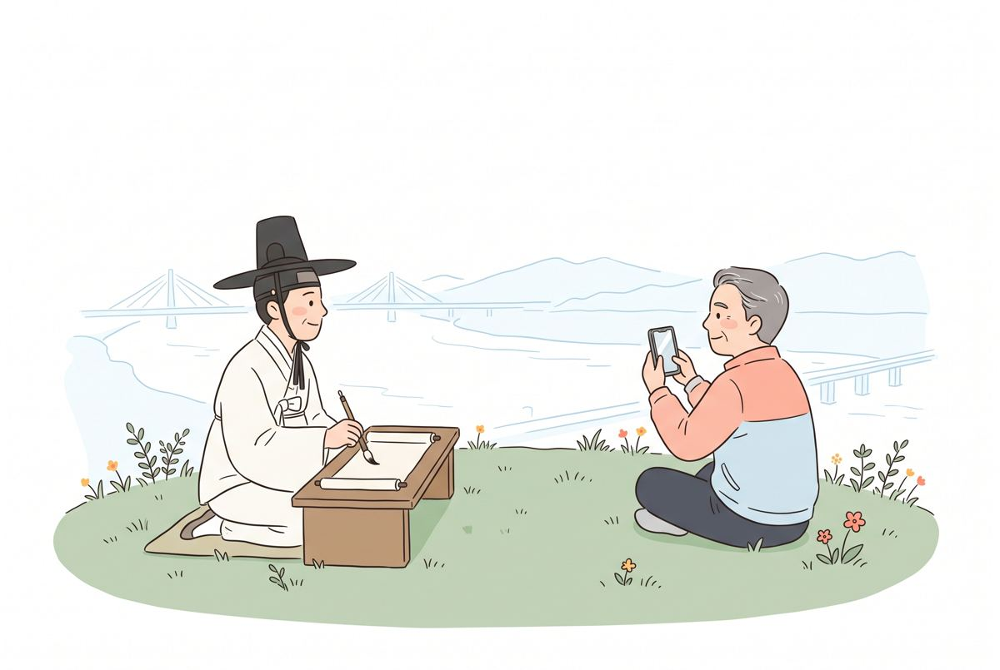

시작하기 전에, 세 가지 약속
- 아무거나 눌러도 고장 나지 않습니다. 실수해도 되는 기계입니다.
- 글자 대신 말로 하셔도 됩니다. 손주한테 말하듯 편하게요.
- 마음에 안 들면 "다시"라고 하세요. AI가 못하는 게 아니라 아직 주문을 다 못 들은 겁니다.
아래 회색 상자 문장은 [복사하기]를 눌러 붙여 넣거나, 그냥 소리 내어 읽어 주셔도 됩니다. ○○ 자리는 내 이야기로 바꿔 주세요.
준비내 폰에 AI 들이기
딱 한 번만 넘으면 되는 산입니다. 막히면 손을 들어 주세요. 도우미가 갑니다.
챗GPT 앱 깔기
- 갤럭시는 Play 스토어, 아이폰은 App Store를 엽니다. 아래 버튼을 눌러도 바로 갑니다.
- 앱 이름 바로 밑에 OpenAI라고 적혀 있는지 봅니다. 다른 회사 이름이면 가짜입니다.
- 설치 → 열기를 누릅니다.
가입은 버튼 하나로
- 갤럭시는 Google로 계속하기, 아이폰은 Apple로 계속하기를 누릅니다. 새 아이디를 만들 필요가 없습니다.
- 폰에 저장된 계정을 고르면 끝. 비밀번호가 기억나지 않으면 손을 들어 주세요.
- 아래쪽에 글 쓰는 칸이 보이면 성공입니다. 카톡이랑 똑같아요.
마이크와 소리 파동 버튼
글 쓰는 칸 오른쪽에 버튼이 있습니다.
- 마이크 모양: 누르고 말하면 글자로 받아 적어 줍니다. 다시 누르면 끝.
- 소리 파동 모양: 전화 통화처럼 말로 주고받습니다. 중간에 "아니, 그거 말고" 하고 끼어들어도 됩니다.
첫째 마당말 마당 · 말동무 사귀기
AI는 무엇이든 물어보면 대답해 주는 똑똑한 말동무입니다. 기계를 배울 필요 없이 말만 걸면 됩니다.
오늘 저녁 반찬 고민
마음에 안 들면 이렇게 고쳐 보세요 (누르면 복사)
찍고, 올리고, 물어보기
입력칸 왼쪽 + 버튼 → 카메라로 꽃, 약 봉투, 안내문을 찍어 올리고 말합니다.
소리 파동 버튼으로 수다 떨기
말로 쏟아 놓으면 글로 정리해 줍니다
소리 파동 버튼을 누르고 이렇게 시작한 뒤, 생각나는 대로 끝까지 말하세요. 대화가 끝나면 채팅에 글로 남습니다.
무료도 음성 대화를 쓸 수 있지만 하루에 쓸 수 있는 시간이 정해져 있습니다.
카메라로 보여 주며 물어보기 (제미나이 라이브)
갤럭시에는 제미나이 앱이 이미 들어 있는 경우가 많습니다. 입력창 오른쪽 라이브(음파 모양) → 아래 카메라 버튼. 무료로 됩니다.
화면 공유를 켜고 "문자 차단을 풀려면 여기서 어디를 눌러?" 하고 물으면 지금 화면을 보며 다음에 누를 곳을 알려 줍니다. 여행지 메뉴판, 처음 보는 가전 버튼도 비추고 물어보세요.
둘째 마당그림 마당 · 겸재 정선처럼 우리 동네 그리기
겸재 정선은 1740년부터 5년 동안 양천현령, 지금으로 치면 강서의 고을 수령이었습니다. 그때 한강과 강서 풍경을 그렸지요. 오늘은 우리가 폰으로 그려 봅니다.
진경산수화 느낌의 2026년 강서
고쳐 보기
손주 생일 카드 그림
내 사진을 동화책 그림으로
+ 버튼으로 내 얼굴 사진을 올리고 말합니다.
손그림 한 장을 포스터로
말로 설명하기 어려운 배치는 종이에 대충 그려 사진을 올리세요. 입력칸 +에 스케치가 있으면 화면에 바로 그려도 됩니다.
사진 스타일 바꾸기, 포장지 글자 바꾸기
외국 약이나 영양제 설명은 그림으로 바꾸기보다 "무슨 내용인지 글로 쉽게 번역해 줘"가 안전합니다.
셋째 마당글 마당 · 내 인생 시 한 편

비결은 한 줄입니다. "바로 쓰지 말고 나한테 먼저 물어봐." 11월에 나올 책 『AI 2027 트렌드&활용백과』에 ABA(Ask Before Answer, 답하기 전에 물어보기)로 소개한 방법입니다. 휴대폰으로 답할 땐 보기를 붙여 달라고 하면 번호만 말하면 됩니다. 그리고 첫 줄은 내가 씁니다.
AI가 먼저 질문하게 하기
AI가 물어보면 마이크를 누르고 번호나 내 말로 편하게 대답하세요.
첫 줄은 내가, 나머지는 함께
다음 마당(노래)으로 이어 가려면
손주에게 보내는 편지
넷째 마당노래 마당 · 내 시가 노래가 된다
노래는 Suno(수노)라는 앱에서 만듭니다. 앱을 하나 더 깔아야 해서, 오늘은 따라오실 분만 도전하시고 나머지 분은 강사 화면으로 함께 들어요.
Suno 앱 깔고 들어가기
- 앱 이름 「Suno - AI 노래·음악 만들기」, 만든 곳이 Suno, Inc.인지 확인하고 설치합니다.
- Google 또는 Apple로 계속하기를 눌러 들어갑니다.
- 만들기를 누릅니다. 메뉴가 영어로 보이면 Create입니다.
설명만 쓰면 가사까지 알아서
심플(Simple) 화면의 설명 칸에 아래 문장을 넣고 만들기를 누릅니다. 장르만 쓰기보다 누구를 위한 노래인지, 어떤 분위기인지, 무슨 이야기를 담을지까지 쓰면 더 잘 나옵니다.
글 마당에서 쓴 내 시로 노래 만들기
- 챗GPT에서 만든 가사를 길게 눌러 복사합니다.
- Suno에서 커스텀(Custom)으로 바꾸고 가사 칸에 붙여 넣습니다.
- 스타일 칸에 아래 중 하나를 넣고 만들기를 누릅니다. 1~2분 기다리면 노래가 나옵니다.
가족 단톡방에 보내기
노래 옆 공유 버튼(점 세 개 또는 화살표) → 카카오톡 → 가족 단톡방을 고릅니다.
앱 하나 덜 깔기: 제미나이 '음악 만들기'
제미나이 입력창 + → 음악 만들기를 고르고 말하면 가사와 노래가 한 번에 나옵니다. 내려받기와 링크 공유도 됩니다. 가볍게 한 곡은 제미나이, 세밀하게 고치려면 수노가 낫습니다.
메뉴는 계정과 요금제에 따라 다르게 보일 수 있습니다.
다섯째 마당만들기 마당 · 말로 게임 만들기

요즘 챗GPT는 대답 안에 버튼과 작은 게임을 바로 만들어 보여 줍니다. 코딩을 몰라도 말로 만듭니다.
손주랑 하는 끝말잇기 게임
강서 퀴즈 게임
① "이 화면에서 바로 해 볼 수 있게 보여 줘"라고 한 번 더 말합니다.
② 답 아래에 미리보기 글자가 보이면 누릅니다.
③ 그래도 안 되면 앱을 최신으로 업데이트합니다. 새 기능은 사람마다 조금씩 늦게 열리기도 합니다.
비결질문 잘하는 법
검색은 도서관 사서, AI는 과외 선생님입니다. 사서는 책 100권을 쌓아 주지만 과외 선생님은 내 사정에 맞춰 정리해 줍니다. 그러니 내 사정을 말해 주세요.
한 문장 공식: 세 토막만 채우세요
책에서는 이걸 목표·맥락·자료·조건·형식·기준, 명세 6칸으로 더 자세히 정리했습니다. 매번 채울 필요 없이 답이 이상할 때 꺼내 보면 되는 진단표입니다. 오늘은 세 토막이면 충분합니다.
마법의 한 줄: "먼저 나한테 물어봐"
『AI 2027 트렌드&활용백과』에 쓴 ABA 핵심 한 줄입니다. ○○ 자리에 하고 싶은 일을 넣으세요. AI가 필요한 걸 먼저 물어보고 훨씬 내 것에 가까운 답을 줍니다.
휴대폰으로 답할 땐 한 줄 더 붙이세요.
조건이 많을 땐 '싱크' 버튼
무료 챗GPT도 입력칸의 싱크(Think)를 누르면 답하기 전에 더 오래 생각합니다. 켜면 파란색이 되고, 메시지마다 새로 켭니다. 간단한 질문엔 안 켜도 됩니다.
책 실습에서는 싱크를 켜자 1분 넘게 생각한 뒤 숙소를 한 곳으로 정해 이동을 줄이고 낮잠 시간까지 넣었습니다.
한 번만 해 두면 편한 '나에게 맞춘 챗GPT'
프로필 → 개인 설정 → 개인 맞춤 설정의 사용자 지침에 한 번 써 두면 매번 말하지 않아도 됩니다.
챗GPT가 나에 대해 잘못 기억한 건 "그거 고쳐 줘"라고 말하면 됩니다.
딱 세 가지: 물어보기 · 고치기 · 확인하기
- 물어보기: 궁금한 걸 그냥 말로.
- 고치기: "더 짧게", "더 쉽게", "다른 걸로". 식당에서 "덜 맵게 해 주세요" 하듯이.
- 확인하기: "이거 확실해? 어디서 나온 얘기야?" 사람 이름, 전화번호, 날짜, 금액은 꼭 다시 확인.
꼭 지키기터미네이터보다 보이스피싱
영화처럼 AI가 스스로 사람을 지배하는 날보다, AI를 나쁘게 쓰는 사람이 더 가까이 있습니다. 요즘은 "여보세요" 한마디, 3초 남짓한 목소리로도 가족 목소리를 흉내 낼 수 있다고 합니다.
AI에게 절대 넣지 않는 다섯 가지
동네 약사님한테 말할 수 있는 정도까지만. "60대, 무릎이 안 좋음"은 괜찮고 숫자로 된 정보와 남의 정보는 넣지 않습니다.
오늘 정하는 '우리 집 암호'
- 가족끼리만 아는 단어 하나를 정합니다. 예: 첫 강아지 이름, 가족 여행 간 섬 이름.
- "엄마, 나 사고 났어. 돈 보내 줘" 같은 전화가 오면 암호를 물어봅니다.
- 일단 끊고 내가 저장해 둔 번호로 다시 걸어 확인합니다.
미국 FBI도 2024년 공익경보에서 가족 간 비밀 단어를 정해 두라고 권했습니다.
최신 사기 수법을 한 장으로 정리해 냉장고에
제미나이 입력칸 + → 딥 리서치에 아래 문장을 넣으면 출처가 달린 보고서를 씁니다. 다 되면 만들기 → 인포그래픽으로 한 장 안내문을, 플래시카드로 외우기 카드를 만들 수 있습니다.
신고 번호와 기관 이름은 공식 사이트에서 한 번 더 확인하세요.
설정 두 가지 (자녀와 함께 한 번만)
- 왼쪽 위 메뉴 → 아래쪽 내 이름(설정) → 데이터 제어 → 모두를 위한 모델 개선 끄기. 내 대화를 AI 공부 재료로 쓰지 않게 됩니다.
- 민감한 걸 물을 땐 위쪽의 임시 채팅을 켭니다. 카톡 비밀 채팅처럼 기록이 남지 않습니다. 학습을 꺼도 대화 기록은 계정에 남을 수 있으니, 남기기 싫은 대화는 임시 채팅이 확실합니다.
메뉴 이름과 위치는 앱 버전에 따라 조금 다를 수 있습니다.
숙제 아닌 숙제오늘 밤 할 일 세 가지
AI는 아는 만큼이 아니라 써 본 만큼 보입니다. 하루 한 번이면 충분합니다.

붓을 든 목민관처럼, 오늘 우리는 폰을 듭니다.
양천현령 겸재 정선은 고을의 강과 산을 직접 보고 그렸습니다. AI 시대의 목민관은 먼저 써 보고 이웃에게 알려 주는 사람입니다.
오늘 만든 노래, 누구에게 먼저 보내시겠습니까?
의원실·도우미용: 강의 전날 보내는 안내 문자
[강서 목민관학교 18기 안내] 내일(10/20 화) 저녁 7시 김덕진 교수님 강의 「인공지능(AI)과 놀아보자!」는 각자 휴대폰으로 직접 해 보는 시간입니다. 오시기 전에 딱 하나만 해 주세요. 1. 갤럭시는 Play 스토어, 아이폰은 App Store에서 "챗GPT" 검색 2. 이름 밑에 OpenAI라고 적힌 앱 설치 3. Google(또는 Apple)로 계속하기 눌러 로그인 결제 화면이 뜨면 X를 눌러 닫으시면 됩니다. 모두 무료입니다. 어려우시면 그냥 오셔도 됩니다. 현장에서 도와드립니다. 휴대폰은 충전해서 와 주세요.
도우미용: 설치할 때 자주 막히는 곳
- 구글 비밀번호를 모를 때: 아이폰은 Apple로 계속하기, 갤럭시는 자녀 도움 없이 해결이 어려우면 강사 화면으로 함께 보기.
- 저장 공간이 부족할 때: 안 쓰는 앱 하나만 지우거나, 오늘은 챗GPT만 설치하고 Suno는 다음에.
- 가짜 앱을 깔았을 때: 이름 밑 회사명이 OpenAI가 아니면 지우고 다시.
- 결제 창이 계속 뜰 때: X를 누르거나 뒤로 가기. 카드 등록은 절대 하지 않기.
- 그림·게임이 안 될 때: 앱 업데이트, 그래도 안 되면 옆 사람 화면으로 함께 보기.